Как делать презентацию
В этом уроке я покажу, как сделать презентацию на компьютере и ноутбуке. Мы научимся делать презентации в программе Power Point. Она входит в состав пакета Microsoft Office, вместе с Word и Excel.
Презентация - это что-то вроде фильма, демонстрации того, о чем говорит рассказчик. Туда можно добавить не только текст и фотографии, но и схемы, графики, диаграммы, видео и музыку. Такие мини-фильмы используются для сопровождения лекций, докладов, визуального представления какого-то товара или услуги.
Создание презентаций в PowerPoint
Зайдите в Пуск – Все программы – Microsoft Office и выберите из списка Microsoft Office PowerPoint.
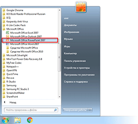Откроется программа, внешне очень похожая на Word. Но листы у нее немного меньше по размеру и называются слайды. Именно на них и будет размещаться вся информация.
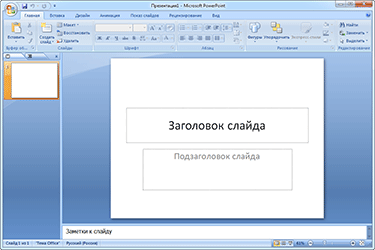Для добавления слайда нажмите на кнопку «Создать слайд» вверху (закладка «Главная»).
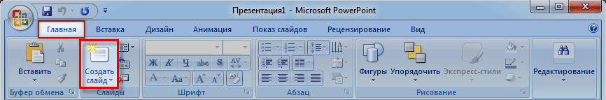В левой части программы показаны все добавленные листы, чтобы было удобнее между ними переключаться. Для удаления лишнего нужно нажать по нему правой кнопкой мышки и выбрать пункт «Удалить».
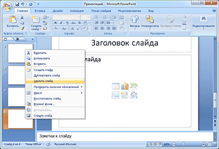Чтобы поменять расположение элементов, нажмите на кнопку «Макет» вверху и выберите подходящий вариант из списка.
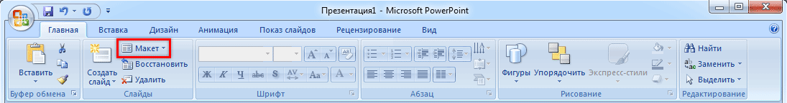Сохранять презентацию следует так же, как и в программе Word - через «Файл» (круглую кнопку в левом углу) – «Сохранить как…».
Подробнее о сохранении можно узнать из вот этого урока "Сохранение".
Оформление
Изначально слайды добавляются в классическом виде – белого цвета, как обычные листы. Но можно этот вид и изменить. Для этого в программе есть специальная вкладка «Дизайн».
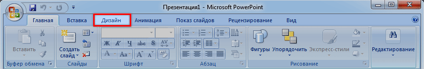Самая важная часть – Темы. Это уже готовые варианты оформления.
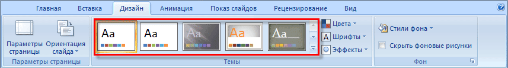По умолчанию выбранная тема применяется сразу ко всем страницам. Но можно назначить ее только для некоторых. Для этого выделите нужные слайды (с левой стороны, удерживая клавишу Ctrl), затем щелкните правой кнопкой мышки по теме и выберите пункт «Применить к выделенным».
А корректировать назначенное оформление можно через кнопки «Цвета», «Шрифты», «Стили фона».
Содержание
Слайды заполняются информацией точно так же, как и в программе Microsoft Word.
Текст. Для печати текста нужно щелкнуть в то место, где он должен быть (например, в часть «Заголовок слайда»). Начнет мигать палочка, которая символизирует курсор. Просто печатаем текст на клавиатуре.
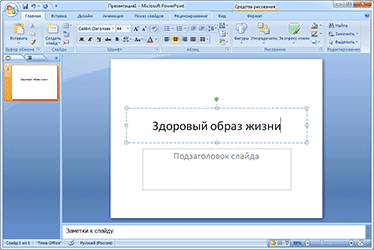Увеличить или уменьшить буквы можно через вот это поле:
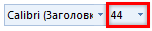А шрифт, то есть вид букв, можно изменить вот здесь:
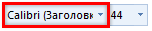Делать это можно как до печати, так и с уже готовым текстом. Только его нужно предварительно выделить.
Для этого нажать на левую кнопку мышки в конце текста и, не отпуская ее, тянуть в начало. Как только он закрасится другим цветом (а, значит, выделится), кнопку мышки нужно отпустить.
Фото. Нажмите на вкладку «Вставка» вверху программы. Для добавления изображений используйте кнопки «Рисунок» и «Клип» (Картинка).
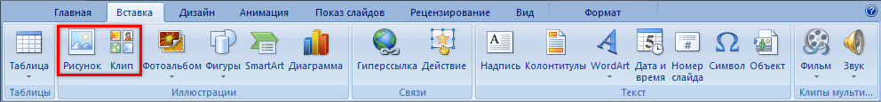Кнопка «Рисунок» используется для добавления фотографии со своего компьютера. Для этого нужно выбрать фото через специальное окошко.
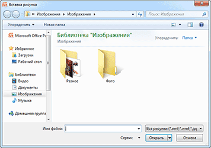А можно просто скопировать фотографию с компьютера и вставить ее на страницу.
«Клип» - это картинки, которые встроены в саму программу. Можно выбрать любую из них через форму поиска с правой стороны.
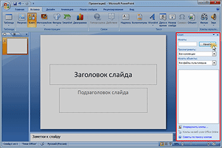В более современных версиях PowerPoint есть еще кнопка «Снимок». Через нее можно сфотографировать экран и вставить этот снимок прямо в слайд.
Но можно это сделать и обычным способом, при помощи скриншота.
Таблица. Нажмите на вкладку «Вставка» вверху программы. Чтобы создать таблицу, щелкните по кнопке «Таблица» в левом углу.
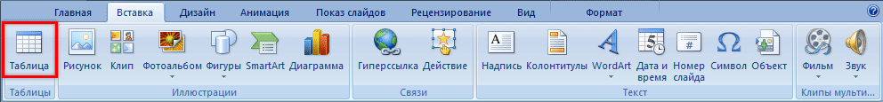Выберите нужное количество ячеек и кликните левой кнопкой мышки для закрепления результата.
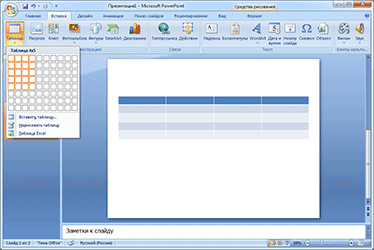Для заполнения таблицы щелкаем по нужной ячейке и печатаем текст. Вверху, через закладку «Конструктор» (Работа с таблицами) можно изменить ее оформление.
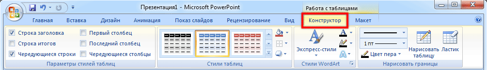Графики, диаграммы. Для их создания также используем вкладку «Вставка» - через кнопку «Диаграмма».
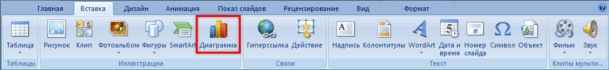После выбора подходящего варианта откроется еще одна программа (Excel) с данными. Через них и нужно править добавленную диаграмму.
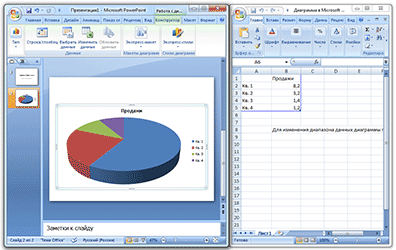Видео и звук. Соответствующие кнопки также находятся во вкладке «Вставка». «Звук» добавляет к слайду музыкальное сопровождения, а «Фильм» (Видео) – видеоролик.
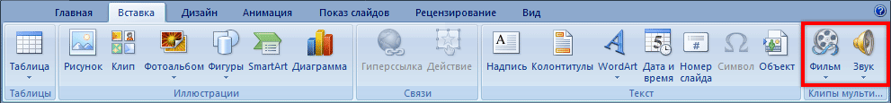Другое. Также вкладка «Вставка» позволяет добавлять в слайды геометрические фигуры, математические формулы, эффектный текст (WordArt) и многое другое.
Демонстрация
Для демонстрации перейдите в «Слайд-шоу» или «Показ». Нажав на пункт «С начала», презентация начнется с первого листа. А нажав на «С текущего слайда» — с того, который в данный момент открыт на экране.
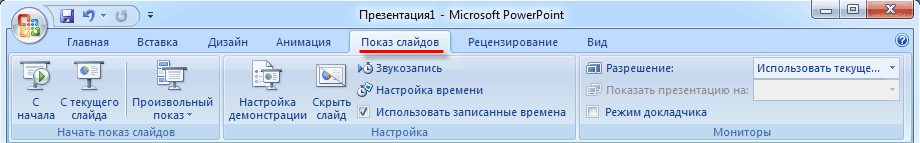При показе презентации каждый слайд будет расширен на весь экран. По умолчанию переключение между ними происходит вручную - мышкой или кнопками со стрелками на клавиатуре.
Чтобы выйти из режима демонстрации, нажмите на клавишу Esc на клавиатуре (вверху слева).
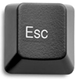Если нужно, чтобы слайды переключались не вручную, а автоматически, нажмите на кнопку «Настройка времени».
После такой настройки, как правило, листы будут отображаться немного по-другому, что не всегда удобно. Для возврата к прежнему виду просто щелкните два раза левой кнопкой мышки по любому слайду.
Анимация. При демонстрации слайды идут друг за другом без каких-либо эффектов – просто меняются. Но можно настроить между ними разные красивые переходы. Делается это при помощи вкладки «Анимация» («Переходы» в версиях 2010-2016).
Здесь можно выбрать подходящий переход. По умолчанию он применяется к тому слайду, который открыт в данный момент. Но можно применить и ко всем слайдам сразу, для этого нажать на кнопку «Применить ко всем».
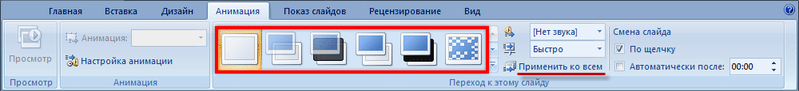Также можно делать такие переходы не только между слайдами, но и между элементами. Например, на слайде есть заголовок, текст и фото. Можно сделать так, чтобы сначала появлялся заголовок, потом плавно возникал текст, а после него – фотография.
В PowerPoint 2007 для этого во вкладке есть специальная часть «Анимация» и «Настройка анимации».
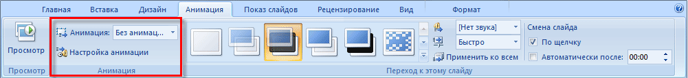В более современных версиях программы (2010, 2013, 2016, 2019) для настройки таких переходов сделали отдельную вкладку «Анимация».
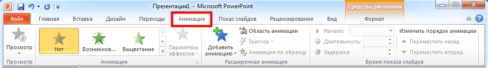Перед тем, как применить эффект к какому-либо элементу, его нужно сначала выделить.